第二章 定量
第二章 定量
(1) 甲、数
量是定量，或者说，不论作为连续的或分立的大小，它都有一个界限。这两类的区别，在此处并没有什么意义。(2) 注释一
空间大小和数的大小，时常被认为同是很确定的两类大小，其区别只是由于连续性和分立性规定之不同，但是作为定量，它们都处在同一阶段。几何学在空间大小方面，一般以连续的大小为对象；而算术则在数的大小方面，以分立的大小为对象。但是这两者以对象之不同，它们之被界限和被规定，也就没有相同的方式和完满性。空间大小只有一般的界限；在它应当被认为是绝对的规定的定量时，它才需要数。几何学本身并不测量空间的形象，它不是测量术，而只是比较那些形象。即使在几何的定义那里，一部分规定也是由等边、等角、等距离取来的。因为圆只依靠圆周上一切可能之点都对圆心有同等的距离，所以圆的规定并不需要数。这些基于相等或不相等的规定，是道地几何的规定。但是这些规定还不够；对其他的东西，例如三角形、四边形，数仍然是需要的；这个数在它的根本中、即在一中，包含着自为的、规定的东西，不包含借助于他物、即借比较而被规定的东西。空间的大小，就点而言，固然具有与一相应的规定性；但是当点超出到自身以外时，点就变为一个他物，变成线；因为点本质上只是空间的一，所以点在关系中，就变成连续性，在连续性中，点的性质，那个自为的规定的东西，那个“一”，便被扬弃了。既然那个自为的规定的东西应当在自身以外的东西中保持自身，那么，线就必须被设想为诸一的一个数量，而界限也必然在自身中获得多个的一的规定，这就是说线的大小也必须和其他空间规定的大小一样，被认为是数。(3) (4) (5) 注释二
(6) (7) (8) 乙、外延的和内涵的定量
1.这两种定量的区别
1.如前所说，定量以数目中的界限为规定性。定量自身就是分立的，是一个多，它不具有和它的界限不同而界限在其外面那样的东西。所以定量连同界限（这个界限在它自己那里就是一个杂多的东西）就是外延的大小。(9) (10) 2.外延的和内涵的大小之同一
度数不是一个在度数以内而外在于自身的东西。不过，它不是不曾规定的一，一般数的根本；这种一不是数目，只是否定的数目，所以并非数目。内涵的大小首先是多数的一个单纯的一，这个一是多数的度数，但是这些度数却既不被规定为单纯的一，也不被规定为多数，而只是被规定为在这种自身外在的关系中，即在一与多数性的同一中。所以，假如多数本身诚然是在单一的度数以外，那么，这个单一度数的规定性就在于它与那些多数的关系；于是度数包含数目。正如作为外延大小的二十，——自身便包含着二十个分立的一那样，被规定了的度数也包含这些一作为连续性，这种连续性就是单一地规定了的多数；这个被规定了的度数便是第二十度，并且只有借助于这个数目才成为第二十度，而这个数目本身又在度数之外。(11) 注释一
在通常观念中，外延和内涵定量常被区别为大小的种类，好像一些对象只有内涵大小，而另一些对象只有外延大小似的。此处又加上哲学的自然科学的观念，它把多数，即外延，例如在充填空间这一物质的基本规定中以及在其他概念中，以这样的意义转变为内涵，即：内涵作为动力的东西，是真的规定，并且在本质上必须把这种内涵，譬如密度或特殊的空间充实程度，不当作在一个定量空间中的物质部分的某个数量和数目来把握，而当作充填空间的物质的力的某一度数来把握。注释二
康德搞了一种独特的办法，把内涵定量的规定应用于灵魂的形而上学的规定。在批判灵魂的形而上学的命题时（他把这些命题叫作纯粹理性之误谬推理），他考虑到从灵魂的单纯性来推论灵魂不灭。他反对这种推论，说（见《纯粹理性批判》第414页）(12) (13) 3.定量的变化
外延与内涵定量的区别，对定量规定性本身，是漠不相关的。一般说来，定量就是建立起来的规定性又被扬弃了，是漠不相关的界限，这种规定性同样也是自身的否定。这种区别在外延的大小中发展了，但是内涵的大小却是这种外在性的实有，这种外在性就是在自身中的定量。这种区别被建立为自身的矛盾，即：必须是单纯的自身关系的规定性（这种规定性就是自身的否定），并且不是在这个规定性那里而是在另一定量中有其规定性。丙、量的无限
1.量的无限概念
定量自身变化并变成另一定量；这种变化前进到无限的进一步规定，就在于定量是作为自身矛盾被提出来的。——定量变成一个他物；但又在它的他有中继续自身，这个他物仍然是一个定量。但是这个定量不仅是一个定量的他物，而且是定量本身的他物，是它作为一个立了界限的东西的否定物，从而也是它的没有界限，它的无限。定量是一个应当（Sollen）；它包含着必须是自为的规定，这种自为的规定又不如说是在一个他物中被规定的；反过来说，它是在一个他物中扬弃了的规定，是漠不相关的自为的持续存在。2.量的无限进展
无限进展，一般说来，是矛盾的表现，而这里则是量的有限物或一般定量所含矛盾的表现。这种进展是有限物和无限物在质的范围内曾经考察过的相互规定；不过却有区别，正如方才说过，在量的事物中，界限本身超出并继续超出自身之外，所以反过来，量的无限物也是在自身那里具有定量而建立的；因为定量在它的自身外在之中，同时就是它本身，它的外在性也属于它的规定。(14) 注释一
坏的无限，尤其是量的无限进展的形式，——即继续飞越界限而无力扬弃界限，并不断回到界限，——常被认为是某种崇高的东西，一种神圣的供献；在哲学中，这种进展同样也被看作是一个最后的东西。这种进展曾多方面供浮夸词藻之用，这些词藻每每被惊叹为崇高的作品。但是这种时髦的崇高，事实上并没有使对象伟大，倒不如说使对象逃掉了，它只是使主体吞噬掉这样巨大的量。这种在量的阶梯上升的高扬，仍然是主观的；在劳而无功之中，它自己承认并不更接近于这个无限的目标，它的贫乏也由此可见，若要达到目的，当然须另作打算。(15) 假如把数和世界堆积成三山五岳，以为这就够得上描绘永恒，那就会忽视了诗人自己已经说出这种所谓使人战栗的超越，是某种白费事而空洞的东西，也忽视了他因此结论说：只有放弃这种空洞的无限进展，才能使真正的无限物呈现在他的面前。
有些天文学家之所以为他们的科学的崇高而高兴，是因为这门科学研究不可测度的繁多的星辰，研究那样不可测度的空间和时间，——距离和周期无论本身已经怎样大，用为单位，在这样的空间和时间之中，即使乘上多少倍，仍旧是缩小到微不足道的。他们对这种情形流连于惊诧，他们希望从一个星球旅行到另一星球那样的生活，以及从不可测度的地方去获得那一类不可测度的新知识。他们以为这种浅薄的惊诧和这种无聊的希望，构成了他们的科学主要优越之点，——这个科学之所以值得惊异，并不是因为这样的量的无限，而是恰恰相反，因为理性在这些对象中认识到尺度关系和规律，并且这些对象就是理性的无限与那非理性的无限相对立。(16) (17) (18) (19) (20) 注释二
前面已经提到过，康德的二律背反，是表达有限物和无限物的对立在较具体的形态中，被应用到想象的特殊负荷者。前面所考察的二律背反，包含着质的有限与无限的对立。在另一个，即宇宙论的四个二律背反的第一个，所考察的，则是在有限与无限的冲突中的量的界限。因此我愿在这里对这个二律背反加以研究。(21) (22) (23) (24) (25) (26) (27) (28) 3.定量的无限
1.无限的定量，作为无限大和无限小，本身就是无限的进展。作为大或小，它是定量，同时又是定量的非有。因此，无限大和无限小只是想象的形象，仔细观察起来，那不过是虚无缥缈的朦胧阴影罢了。但是在无限进展之中，这种矛盾便在当前明显出现了；因此定量的本性，这个作为内涵大小而达到了实在性的东西，便和在它的概念中一样，在它的实有中建立起来了。必须加以考察的，就是这种同一性。注释一 数学无限的概念规定性。
(29) (30) (31) (32) (33) (34) 2 ⁄7 这个分数，它并不像1，2，3等等定量，它固然是一个普通的有限的数，但不是一个直接的数，如整数那样，而是由两个其他的数间接规定的分数；那两个数互为数目和单位，而单位也是一确定的数目。但是假如将这两个数相互的密切规定抽掉，只就现在它们在质的关系中恰巧是定量这一点来观察，那么，2和7在另外的地方就是漠不相关的定量；但是在这里，由于它们仅仅出现为彼此的环节，从而第三者（即被称为指数的定量）也出现了，所以它们并不是立刻被当作2和7，而只是依照它们的相互规定性才能有效。因此可以同样用4和14，或6和21等等以至无限来代替它们。这里，它们开始有了质的特性。假如它们被当作只是定量，那么2和7便是：一个绝对只是2，另一个绝对只是7；4，14，6，21等等也都绝对与这个数不同，而以上等等数既然只是直接的定量，它们也就不能够彼此代替。但是2和7既然依照规定性，不被当作是这样的定量，那么，它们的漠不相关的界限便扬弃了。于是从这一方面看来，它们便包含了无限性的环节；因为它们不仅不再是它们本身，而且它们的量的规定性仍然保留，但是又作为一个自在之有的质的规定性而保留——即依照它们在比率中的值。可以用无限多的别的数来代替这两个数，而分数则由于比率所具有的规定性，其值并不改变。2 ⁄7 像是无限物的较适合的表现，因为a和b从它们的相互关系取出来，仍然是不确定的，即使分离以后，它们也没有自己的特殊的值。这两个字母固然被当作不确定的大小，但其意义却是它们可以是任何一个有限的定量。这样，它们诚然是一般的想象，但又只是确定的数的想象，既然如此，它们之在比率中这一点，于它们说来，是不相干的；它们在比率外，也保持这个值。2 ⁄7 这个分数可以表示为0.285714……，2 ＋a3 ＋……等等。这样，分数就是一个无限的系列；分数本身意谓着这个系列的总和或有限的表现形式。比较一下这两种表现形式，那么，无限系列那一种表现形式就是不再把分数表现为比率，而是依照这样的方面来表现它，即分数作为一定数量的彼此相加的东西，作为数目，是定量。至于这些大小应该把分数作为数目来构成，而本身又是由十进位的分数、即由比率而成，那却与这里的问题无关；因为这种情况所涉及的，只是这些大小的特种单位，而不是构成数目那样的大小；正如由多数符号构成的十进位系统的一个整数，本质上被当作数目，而并不管它是由一个数和十这个数及其方幂的乘积所构成的那样。所以这个问题也不在于除我们所举的例2 ⁄7 以外，还有其他造成十进位分数的分数，并没有发生无限的系列；每一个分数都可以用与此不同的单位的数的体系来表示。2 ⁄7 或(35) (36) 2 ＋a3 ……等系列便仅仅是想象的、或意见的无限物，因为它们没有现实性，总是缺少点什么；反之2 ⁄7 或2 ⁄7 或2 ⁄7 中2和7两个数那样，因为同样可以用4和14，6和21等等以至无限的其他的数来代替而不改变这个分数中所定的值。对2 ⁄7 所应该表现的值。现在的意义是：对于一个函数中的x和y，也可以用一个无限的、即不可穷尽的数量的数来代替，a和b是与那x和y同样可变化的大小。因此，为大小规定选择了变量这一名词是很含糊而不幸的，这种大小规定的有兴趣之处及其处理方式，是在与单纯可变性完全不同的地方。2 ⁄7 或2 ⁄7 和2 才有。所以这个比率的两端不仅第一、不是确定的定量，而且第二、它们的比率也不是一个固定的定量（这里也不意谓着它是像a和b那样的一个固定的定量），不是一个固定的商数，这个商数作为定量也是绝对可变的。这一点的含义，唯在于：不是x对y有比率，而是只有x对y的平方才有比率。一个大小对方幂的比率，不是一个定量，而在本质上是质的比率；方幂比率是一种情况，这种情况必须看作是基本规定。——但是在直线函数y＝ax之中(37) (38) (39) (40) (41) (42) (43) (44) (45) (46) (47) (48) (49) (50) (51) (52) (53) n 而发生的系列，用它的第一项便可以完全穷尽xn 的微分。其余各项之不被考虑，并不是由于它们的相对微小；——这里并不曾假定有不精密之处、缺点或错误，被另一错误抵消了或改善了，——卡尔诺主要就是从这种观点来为无限小的普通计算方法辩护的。既然所处理的不是一个总和，而是一个比率，那么，这个微分便完全可以由第一项找到；假如需要更多的项，即更高级的微分时，其规定也不包含作为总和的一个系列之继续，而包含人们唯一想要有的同一比率之重复，而这个比率却在第一项中已经完备了。对一个系列及其总和的形式上的需要，以及和它有关的东西，都必须与那种对比率的兴趣分别开。2 ＋rh3 ……等等，所以k＝ph＋qh2 ＋……等，而kh＝p＋qh＋rh2 ……。假如现在k和h消失了，那么，除p之外，第二项也消失，于是现在那个p就是两种增长比率的极限。可见h作为定量是被当作＝0，但是(54) 2 固然可以消失；但dx与x对比，却更会消失；这就真正意谓着：dx只是对dy才有一比率。——几何学家们在这样的表述中主要该做的事，就是使一个大小对它的极限的接近，明白易晓，把握住定量与定量的区别如何是区别而又不是区别这一特点。但是“接近”这一范畴，却本身简直什么也没有说，也不曾使任何东西明白易晓；dx已经把接近抛在背后，它既不是近，也不是更近；而无限近本身就意味着邻近和接近的否定。(55) (56) (57) 注释二 微分计算从它的应用所引导出来的目的
前一注释中所考察的，一部分是微分计算所用的无限小的概念规定性，一部分是将无限小引入微分计算的基础；两种规定都是抽象的，所以本身也是容易的。但是所谓应用，却既提供了较大的困难，又提供了较有趣的方面；这个具体方面的原素，应该是本注释的对象。微分计算的全部方法只用一个命题便毕业了，即dxn ＝nxn－1 dx，或(58) xn ＝（y＋z）n ＝（y＋nyn－1 z＋……）.
这种表达，对于方幂的展开，即对于达到方幂的乘方函数，是从总和本身出发的；但这里问题所在，既不是总和本身，也不是由总和所产生的系列，那必须从总和取来的东西，只是关系。大小的关系本身，一方面是在抽去一总和本身加多（plus）之后所剩余的东西。但是这样的关系之已经被规定，就在于这里的对象是ym ＝axn 方程式，已经是较多的（变）量的复合体，它包含了这些量的方幂规定。在这个复合体中，每一个量都直接被当作是与另一个量有关系，其意义可以说是对它自身的加多，——被当作是另一量的函数；它们互为函数的特点，给了它们加多这一规定，正因此，这个加多是完全不确定的，而不是增长、增量以及诸如此类的东西。但是我们也可以把这种抽象观点放在一边；事情可以完全简单地停留在这样的一点，即已知在方程式中互为函数的变量，以致这种规定性包含了方幂的比率，在这之后，每一个乘方的诸函数也就可以互相比较——这第二类的函数，除了由乘方本身规定而外，并无其他规定。把一个方程式从它的变量的方幂移到它的展开函数的比率，起初可以就是随意的，或是可能的；这种转变的用处必须在以后的目的、益处、使用中显示出来；所以要做这种改移，只是由于它的有用。假如上面是从表达一个量（它作为总和，在自身中是被认为有不同的部分的）的这种方幂规定出发，那么，这种用处便只是一部分为了指出这些函数是什么种类，一部分在于求出这些函数的方式。
这样，我们便到了普通解析的展开，它为了微分计算之故，将被理解为这样，即变量有了dx或i的增长，而现在二项式的方幂也由属于二项式的各项系列而表现出来。但所谓增长不应是一定量，只是一形式，它的全部价值就在于帮助展开；人们对以前提到的极限观念所愿意承认（而以尤拉和拉格朗日最为坚决）的东西，只是由变量产生的方幂规定，即增长及增长的方幂的所谓系数，系列依照这些方幂规定而安排自身，不同的系数也属于这些规定。这里还可以说只是为了展开的缘故，才假定有一增长，它不是定量，所以对此用1（一），是最合宜的，因为这种增长在展开中永远只出现为因数，正是一这个因数完成了虽有增长而无量的规定性和变化这一目的；另一方面，带着量的差分这种错误观念的dx，以及带着在此处无用的普遍性假象的其他符号，如i，总是有定量及定量方幂的外貌和假托；而后这种假托又惹起必须将它取消和省去的麻烦。为了维持一个依方幂而展开的系列形式，指数的符号作为指标（indices）同样也可以加在一的后面。但是无论如何，必须抽掉系列和按系数在系列中地位而有的系数规定；这一切之间的比率都是同一的；第二函数之从第一函数导引出来，也正如第一函数从原始函数导引出来那样，假如一个函数被算作第二函数，那么第一函数，虽然也是导引出来的，而对于第二函数说来也就又被算作原始函数了。重要之点是兴趣不在于系列，而唯一在于从展开所发生的方幂规定，这种规定与对方幂是直接的量有比率。所以这些方幂并不被规定为展开的首项系数，因为一项是以与系列中其他后继各项的关系而被称为首项，但是一个作为增长方幂这样的方幂以及系列本身，却与此无关，假如宁愿要导出的方幂函数，或如以前说的量的乘方函数这样单纯的名词，那么，它就已经被假定为已知的，“导数”就以这种方式被认为是包括在一方幂之内的展开了。(59) (60) (61) 2 有了p﹕2y，或是代替2ax－x2 ＝y2 有了a－x﹕y，这就是以后常常被称为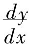的那个比率。这方程式是一个曲线方程式，那个比率完全依靠这个方程式，从那里（这在上面就是按照一个单纯的规则）导出的，却反而是一个直线的比率，某些直线以此而有比例；p﹕2y或a－x﹕y，本身是从曲线的直线，即从坐标线，参数而来的比率；但是人们从这里还是没有知道什么东西。有兴趣的事，是要知道关于其他在曲线那里出现的直线，求出适合于它们的那个比率，即两种比率相等。——其次，问题是：由曲线本性所规定的，而又有这样比率的直线，是什么？——但这是久已知道的东西，由那种方法所获得的比率，就是纵坐标与次切线的比率。古人曾经用聪敏的几何方法求出这个；近代发明者所发现的东西，只是经验的办法，把曲线方程式如此安排，以便提供已经知道的那个第一种比率，它等于那包含它所要规定的直线（这里就是次切线）的比率。方程式的那种安排，一部分是有方法地去理解并造成的，即取导数（Differentiation），一部分却是发明了想象的坐标增量以及由这两个增量与切线的一个同样想象的增量所构成的想象的特殊三角形，于是由方程式的开方而找到的比率和纵坐标与切线的比率两者的比例性质，不仅不被表述为是经验地从旧知识得来的某种东西，而且是经过证明的东西。但是旧知识却以上述规则的形式，一般地，极其明白地证明自身假定是特殊三角形和那种比例性质的唯一的起因和有关的理由。(62) 2 而且这个i归根到底应当意谓着是一个数，于是便须设想i是一个分数，而i2 本身便比i小；这样，可以把i当作是一个随意的大小的这种观念，在此便是多余的，甚至用得不是地方。对较大的小的证明，因此也与无限小毫不相干，在这里丝毫不须引用无限小。(63) (64) 2 －ax－b＝0求微分便会有一个新方程式2x－a＝0；或从x3 －px－q＝0得到3x2 －p＝0。这里也可以说这样导出的方程式，其正确完全不是自明的。在一有两个变量的方程式中，变量之所以不失其为未知数的这种特色，正因为它们是可变的，如上面考察过的，其所发生的结果，只是一个比率；这是由于已经指出过的很简单的理由，因为用乘方函数来代替方幂本身的地位，方程式两项的值便会变化，至于在这样变了值的两项之间是否还有一个方程式，这件事就本身说来，却仍然是未知的＝P这个方程式不过表示P是一个比率，对(65) 2 ，在这以前也已经提到过；——2 这一整体是结果，或更确切地说，是重力的法则。——从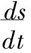＝2at导出的命题也是一样，这命题说：假如重力停止发生影响，那么，物体便将以坠落终止时所达到的速度，在相等于坠落所费的时间内，通过它所曾经过的空间的两倍。——这里包含着一个本身很歪曲的形而上学；坠落的终止，或说物体坠落所终止的时间部分，它本身总之还是一个时间部分；假如它不是时间部分，那就是假定了静止，从而也就没有速度；速度的提出，只能按照在一定时间内，而不是在时间的终止部分所经过的时间。假如现在毕竟要把微分计算应用于完全没有运动的物理部门，例如光的情况（除了它在空间中的所谓传播之外）和颜色的量的规定，而将这里一个平方函数的第一导数也叫做速度，那么，这就必须认为是冒充存在物更要不得的形式主义。2 方程式所表示的运动。在这个运动之后，最简单的运动将是其方程式为s＝ct3 的运动，但是自然界并没有表现过这类的运动；我们还不知道c这个系数能意谓什么。对系数c说，虽然是如此；反之，却有一个运动，其方程式是s3 ＝at2 ，这就是太阳系天体运动的克卜勒规律；——这里第一个导出的函数(66) 2 ＝dx2 ＋dy2 这一方程式。拉格朗日的解说，由上述基础出发，却相反地指出弧的大小，对一个导出的函数说来，是原来的函数，其特殊之项，本身就是一个函数，这个函数是由一个导出函数与纵坐标的原来函数的比率构成的。(67) (68) (69) 注释三 其他与质的大小规定性有关的形式
微分计算的无限小，就它的肯定意义说，就是质的大小规定性，对于这种规定性，我们曾较详细地指出它在这种计算中，不仅出现为一般的方幂规定性，而且是一方幂函数与展开方幂的比率那种特殊的方幂规定性。但是这种质的规定性所呈现的形式，还更为广泛，也可以说更为微弱；这种形式以及与此有关的无限小的使用和无限小在这种使用中的意义，还应该在这个注释中加以考察。3 ﹕t2 的克卜勒定律）支配的，其时间的另一方面，是受算术规定支配的。(70) (71) (72) 2 ，或d.a2 ＝2a﹕a2 ＝2﹕a或t﹕at2 的引力律，那么，它就给予了什么也没有说的1﹕a，2﹕a，1﹕at等比率；这些比率的各项，对它们的单纯的量的规定来说，必须用不同的质的意义使它们相互分开，譬如s﹕at2 ，作为一种质的大小，因此而被表现为另一种质的大小的函数。于是呈现于意识的，便只是量的规定性；用这种规定性，按它的方式去运算，毫无困难；要用一条线的大小与另一条线的大小相乘，也不会有麻烦；但是这些大小相乘，立刻便产生了从线过渡为面这样质的变化；在这种情况下，一个否定的规定出现了；这种规定引起了困难；理解了它的特点和事物的简单本性，困难是可以解决的；但是用无限物来帮忙，想由此消除困难，却反而只是陷于混乱，使困难完全悬而未决。【注释】
(1) 参看第120页。
(2) 参看第120页。
(3) 反思的环节，指同一与区别。——译者注
(4) “必须……概念上去”一句，黑格尔说得较为简括，并非逐字征引。参看蓝译本第36页。——译者注
(5) 参看蓝译本第36页，重点是黑格尔加的。——译者注
(6) 参看第120页。
(7) 莫德拉图，新毕达哥拉斯派，尼罗王时代人。——原编者注
(8) 参看第120页。
(9) 前面的多（Vieles），是定量以前的环节，与一相对，这里所说多数（Mehreres），是定量已经规定为数以后的环节。黑格尔在抽象概念发展中，往往用寻常的字眼而又附加一些独特的意义，因而更增加了晦涩。——译者注
(10) 他物，指数目。——译者注
(11) 这些规定，指定量、数等。——译者注
(12) 参看蓝公武中译本第277页。——译者注
(13) 引文中的重点，都是黑格尔加的。——译者注
(14) 两者，指定量及他物。——译者注
(15) 以下一段引文，与现在流行的各版本不同，尤其后半出入很大。黑格尔引用的版本现已无从查考，引文中重点是黑格尔加的。关于这一段可参看伏尔兰德本第186页，商务印书馆中译本，1960年，第164页。——译者注
(16) 《实践理性批判》，伏尔兰德本第186页，商务印书馆版第164页。这一段文字仍与现在流行版本差别很大。重点是黑格尔加的。——译者注
(17) 《实践理性批判》，伏尔兰德本第186页，商务印书馆版第164—165页，词句仍略有出入。重点和括弧内的词句是黑格尔加的。——译者注
(18) 黑格尔曾多次阐述“不同”“区别”“差异”等都是关系，这里是指康德的自然规律，即使与意志不同，也与意志没有本质关系。——译者注
(19) 两者，指意志与自然。——译者注
(20) 参看第120页。
(21) 参看第120—121页。
(22) 参看《纯粹理性批判》，蓝译本第330页。重点是黑格尔加的。——译者注
(23) 参看第120—121页。
(24) 参看第120—121页。
(25) 《纯粹理性批判》，篮译本第330页。重点是黑格尔加的。——译者注
(26) 参看第120—121页。
(27) 《纯粹理性批判》，蓝译本第331页。此处黑格尔是概括大意，并非逐句征引原文。——译者注
(28) 参看第120—121页。
(29) 参看第121页。
(30) 参看第121页。
(31) 见《纯粹理性批判》中对宇宙论第一个二律背反正题的注释。——黑格尔原注
(32) 《纯粹理性批判》，蓝译本，第332页，中间删略了关于世界和时空的几句话。——译者注
(33) 《纯粹理性批判》，蓝译本，第333页，重点是黑格尔加的。——译者注
(34) 参看第122页。
(35) 见斯宾诺莎《伦理学》第一部分，命题八，附释一。贺麟译本第7页。——译者注
(36) 按指《伦理学》第一部分，公则（五），贺麟译本第4页，以下引文，仍是《书信集》中语。——译者注
(37) 参看第122页。
(38) 参看《自然哲学之数学原理》，郑太朴译，商务印书馆版，第60—61页。——译者注
(39) 卡伐里利（Cavalieri，1598—1647），博洛尼亚（Bologna）的数学教授，著有：《不可分的连续的新几何学》，1635年；《几何学习题》，1647年。——原编者注
(40) 参看第122页。
(41) 拉萨尔·尼古拉·马格里特·卡尔诺伯爵（Graf Lazare Nicolas Marguerite Carnot，1753—1823），共和国军“胜利的组织者”，一直到1815年被放逐时，在政治上和军事上都同样是重要人物，死于马格德堡。他的《关于微分计算的形而上学的一些思考》出版于1797年。——原编者注
(42) 参看第122页。
(43) 参看第122页。
(44) 尤拉（Leopold Euler，1707—1783），彼得堡、柏林的教授，以后又在彼得堡。著有《无限的分析引论》，1748年；《微分计算教程》，1755年，《积分计算教程》，1768—1794年。——原编者注
(45) 参看第122页。
(46) 拉格朗日（Jos Louis Lagrange，1736—1812），尤拉的柏林后继者，以后又任巴黎综合工艺学院教授。著有《解析函数论》，1797年出版。——原编者注
(47) 数学中0﹕0这个比率的值是不确定的。——译者注
(48) 兰登（John Landen，1719—1790），英国数学家，著有《数学夜思集》，1755年，等书。——原编者注
(49) 参看第122页。
(50) 费尔马（Pierrede Fermat，1601—1665），著有《数学运算的变数》，1679年。——原编者注
(51) 巴罗（Isaac Barrow，1630—1677），剑桥大学教授，著有《几何学讲义》，1669年，《光学讲义》，1674年。——原编者注
(52) 意思是说：弧本是曲线，但在无限小的情况下，却被当作了直线。——译者注
(53) 拉格朗日在应用函数论于力学，即直线运动一章中，把这两种观点以简单的方式并列起来（《解析函数论》，第三部分，第一章，第四节）。经过的空间被看作是流过的时间的函数，这就是x＝ft方程式，后者作为f（t＋θ）展开时，便有：2 比较，因为那里只有这样两项。由于解析展开而产生了各项，这个方程便有了说明，只是由于假定了这种说明，这个方程才获得它的形态；这个假定是匀加速运动由一个形式上匀速的，以在先前时间部分所达到的速度而继续的运动，和一个被付与重力的增长（它在s＝at2 中就是a，即经验的系数）综合而成，——这一个区别在事物本性中并不存在，也无根据，而只是对着手解析处理时所得的东西，作了错误的物理的表现。——黑格尔原注
(54) 连续量或流量这个范畴，是由观察外在的和经验的大小变化而提出的，——这些大小由一个方程式而有了互为函数的关系；但是微分计算的科学对象，既然是一定的（通常用微分系数来表示的）比率，而这样的规定性很可以称为规律；于是对这种特殊的规定性说来，单纯的连续性一方面已经是一种外来的东西，另一方面，这种连续性在一切情况下都是抽象的，而在这里则是空洞的范畴，因为它关于连续规律，什么也没有说。在这里将会完全堕入什么样的徒具形式的定义，这从我的可尊敬的同事狄克孙教授先生* 对微分计算演绎时使用的基本规定，联系到对这门科学一些新著的批评所作的敏锐的、一般的论述，便可以看出，这种论述见《科学评论年鉴》1827年，153号以下；在同上年鉴1251页甚至引证这样的定义：“一个经常的或连续的量，连续物（Kontinuum），是每一个被设想为在变的状况之下的大小，以致这个变的出现不是以跳跃的方式，而是由于不断的前进。”这到底不过是被下定义的事物的同语反复而已。——黑格尔原注
(55) 诸角，指上面所说的三角形内的三个角。——译者注
(56) 意指即使弧被当直线处理，它所构成的三角形，仍然是同一的。——译者注
(57) 舒伯特（Schubert，Friedrich Theodor von，1758—1825），彼得堡天文台长，著有《理论天文学教科书》，1798年；《通俗天文学》三卷，1804—1810年。——原编者注
(58) 假如对于方幂的展开，拿（a＋b＋c＋d＋…）n 来代替（a＋b）n ，那也不过是解析所必须要求的普遍性那种形式主义而已。别的许多地方也是这样做的；维持这样的形式，可以说仅仅是为了卖弄普遍性的假象；事情其实在二项式便已经穷尽了，由二项式的展开，便找到了规律，而那个规律却是真正的普遍性，不是规律的表面的、仅仅空洞的重复，这种重复完全是由那个a＋b＋c＋d＋…所引起的。——黑格尔原注
(59) 指算术中从一比例的三个已知数求第四未知数之法。——译者注
(60) 罗伯伐尔，Personne，Gilles，Sieur de Roberval，1602—1675年。——原编者注
(61) 费尔马，法国数学家，是应用微分量来找出切线的第一人。参看本书第284页原编者注。——译者注
(62) 较大的小，即更小；绝对较大的小，即在一定条件下，没有比它更小的，这是指上文所说的增量。——译者注
(63) 上面的引句原为法文。——译者注
(64) 平方的方程式，即二次方程式。黑格尔这里要强调这种方程式的几何性质，故用此不习见的名词。——译者注
(65) 微分方程式的项，皆比1小，故数的大小与其因次高低成反比例。——译者注
(66) 即规定所要求的大小，是在一较大者和一较小者之中。——译者注
(67) 伐勒里乌斯（Valerius，Lucas），1618年死于罗马，伽利略称他为当时的亚基米德，著有《从简单的错误论求抛物线平面法》。——原编者注
(68) 卡伐列里（Cavalieri，Bonaventura Francesco，1598—1647），意大利的数学家，著有《几何学》、《几何习题》等书。——译者注
(69) 在以前所引的批评中（《科学评论年鉴》第二卷，1827年，第155—156号以下），有一个精通本业的学者史泊尔先生* 的很有趣的说法，这是从他的《流量计算的新原理》（布朗施维格，1826年）引来的，这些说法涉及一种情况，微分计算的晦涩而不科学，主要需溯因于它，这也很符合于我们以前关于这种计算的理论的一般情况所说的。他说：“纯算术的研究当然比一切类似的研究，都更与微分计算有关，人们不曾将它与真正的微分计算分开，甚至像拉格朗日那样，把它认为是事物本身，而人们却把这种研究仅仅看作是微分计算的应用。这种算术研究包括求微分的规则，泰勒定理的导数等，甚至各种求积分的方法也在内。情况完全相反，那些应用才正是构成真正微分计算的对象，从解析出发的微分计算是以一切那些算术的展开和运算为前提。”——我们曾经指出，在拉格朗日那里，将所谓应用与从系列出发的那种一般部分的办法分开，怎样恰恰提供了突出微分计算本身特性之用。上述的那位著者说，正是所谓应用构成真正微分计算的对象，但是可惊异的，是他有了这种饶有兴趣的见解，怎样会让自己进入（见上引的书）那种连续大小、变、流动等等形式的形而上学，想在那些废物之上再添上新的废物；那些规定之所以是形式的，因为它们只是一般的范畴，没有举出事物的特点，而事物却是要从具体学说，从应用去认识和加以抽象的。——黑格尔原注
(70) 意思是说，既然两个三角形完全相等，便实际只是一个三角形。——译者注
(71) 达盖（Tacquet，Andr.，1611—1660），安特威普耶稣教公学教授，著有：《圆柱体与环形》五卷，1651—1659年。——原编者注
(72) 原子主义的方法，即指不可分的方法。——译者注
 这个分数可以表示为1＋a＋a2＋a3＋……等等。这样，分数就是一个无限的系列；分数本身意谓着这个系列的总和或有限的表现形式。比较一下这两种表现形式，那么，无限系列那一种表现形式就是不再把分数表现为比率，而是依照这样的方面来表现它，即分数作为一定数量的彼此相加的东西，作为数目，是定量。至于这些大小应该把分数作为数目来构成，而本身又是由十进位的分数、即由比率而成，那却与这里的问题无关；因为这种情况所涉及的，只是这些大小的特种单位，而不是构成数目那样的大小；正如由多数符号构成的十进位系统的一个整数，本质上被当作数目，而并不管它是由一个数和十这个数及其方幂的乘积所构成的那样。所以这个问题也不在于除我们所举的例2⁄7以外，还有其他造成十进位分数的分数，并没有发生无限的系列；每一个分数都可以用与此不同的单位的数的体系来表示。
这个分数可以表示为1＋a＋a2＋a3＋……等等。这样，分数就是一个无限的系列；分数本身意谓着这个系列的总和或有限的表现形式。比较一下这两种表现形式，那么，无限系列那一种表现形式就是不再把分数表现为比率，而是依照这样的方面来表现它，即分数作为一定数量的彼此相加的东西，作为数目，是定量。至于这些大小应该把分数作为数目来构成，而本身又是由十进位的分数、即由比率而成，那却与这里的问题无关；因为这种情况所涉及的，只是这些大小的特种单位，而不是构成数目那样的大小；正如由多数符号构成的十进位系统的一个整数，本质上被当作数目，而并不管它是由一个数和十这个数及其方幂的乘积所构成的那样。所以这个问题也不在于除我们所举的例2⁄7以外，还有其他造成十进位分数的分数，并没有发生无限的系列；每一个分数都可以用与此不同的单位的数的体系来表示。 ，事实上就是一个比率；而这个所谓有限的表现形式就是真的无限的表现形式。反之，无限系列倒真的是总和；它的目的是要把本身是比率的东西，以一个总和的形式来表现，而系列现有的各项不是一个比率的项，而是一个总积（Aggregat）的项。另一方面，系列还不如说是有限的表现形式；因为它是不完圣的总积，本质上仍然是有缺憾的。系列就其实有的东西而言是一定的定量，但同时又是一个较少于本身应该有的定量；而系列所缺少的东西也同样是一个一定的定量；所缺少的部分事实上正是系列中称为无限的那个东西，就仅仅形式方面说，这个部分是一个缺少的东西，一个非有；就它的内容说，它是一个有限的定量。在系列中实有的东西连同所缺少的一起，就构成了分数那样的东西，这是系列应该是而又不能够是的一定的定量。无限这个字，即使在无限系列中，也常常被人以为一定是某种高尚尊严的东西，这是一种迷信，知性的迷信；我们已经看到了它倒不如说是要归结到有缺憾的规定上去。
，事实上就是一个比率；而这个所谓有限的表现形式就是真的无限的表现形式。反之，无限系列倒真的是总和；它的目的是要把本身是比率的东西，以一个总和的形式来表现，而系列现有的各项不是一个比率的项，而是一个总积（Aggregat）的项。另一方面，系列还不如说是有限的表现形式；因为它是不完圣的总积，本质上仍然是有缺憾的。系列就其实有的东西而言是一定的定量，但同时又是一个较少于本身应该有的定量；而系列所缺少的东西也同样是一个一定的定量；所缺少的部分事实上正是系列中称为无限的那个东西，就仅仅形式方面说，这个部分是一个缺少的东西，一个非有；就它的内容说，它是一个有限的定量。在系列中实有的东西连同所缺少的一起，就构成了分数那样的东西，这是系列应该是而又不能够是的一定的定量。无限这个字，即使在无限系列中，也常常被人以为一定是某种高尚尊严的东西，这是一种迷信，知性的迷信；我们已经看到了它倒不如说是要归结到有缺憾的规定上去。 都是现实的无限物，不仅有系列中现在各项的东西，并且还有系列所缺少而只是应该有的东西。2⁄7或
都是现实的无限物，不仅有系列中现在各项的东西，并且还有系列所缺少而只是应该有的东西。2⁄7或 同样是一个有限的大小，就像斯宾诺莎封闭在两个圆之间的空间及其各种不相等那样，并且也像这个空间那样可以使其较大或较小。但是并不因此而发生较大或较小的无限物那种荒谬事情；因为这个整体的定量与它的环节的比率，与事物的本性、即与质的大小规定无关；那在无限系列中实有的东西，同样是一个有限的定量，但除此之外，它还是一个有缺憾的东西。想象对于它仍然停留在定量本身那里，并不曾反思质的关系，而质的关系却构成现存的不可通约性的基础。
同样是一个有限的大小，就像斯宾诺莎封闭在两个圆之间的空间及其各种不相等那样，并且也像这个空间那样可以使其较大或较小。但是并不因此而发生较大或较小的无限物那种荒谬事情；因为这个整体的定量与它的环节的比率，与事物的本性、即与质的大小规定无关；那在无限系列中实有的东西，同样是一个有限的定量，但除此之外，它还是一个有缺憾的东西。想象对于它仍然停留在定量本身那里，并不曾反思质的关系，而质的关系却构成现存的不可通约性的基础。 同样也可以用任何数代替a和b而不改变2⁄7所应该表现的值。现在的意义是：对于一个函数中的x和y，也可以用一个无限的、即不可穷尽的数量的数来代替，a和b是与那x和y同样可变化的大小。因此，为大小规定选择了变量这一名词是很含糊而不幸的，这种大小规定的有兴趣之处及其处理方式，是在与单纯可变性完全不同的地方。
同样也可以用任何数代替a和b而不改变2⁄7所应该表现的值。现在的意义是：对于一个函数中的x和y，也可以用一个无限的、即不可穷尽的数量的数来代替，a和b是与那x和y同样可变化的大小。因此，为大小规定选择了变量这一名词是很含糊而不幸的，这种大小规定的有兴趣之处及其处理方式，是在与单纯可变性完全不同的地方。 中，2和7每一个本身都是规定了的定量，关系对于它们是不重要的；a和b也同样代表这样的定量，它们在比率之外也仍然是它们原来的样子。此外，2⁄7和
中，2和7每一个本身都是规定了的定量，关系对于它们是不重要的；a和b也同样代表这样的定量，它们在比率之外也仍然是它们原来的样子。此外，2⁄7和 也是一个固定的定量，一个商数；比率构成一个数目，分母表示数目的单位，分子表示这些单位的数目，或倒过来说也可以；即使4和14等等代替了2和7，比率作为定量仍然是同一的。但是这一点在譬如
也是一个固定的定量，一个商数；比率构成一个数目，分母表示数目的单位，分子表示这些单位的数目，或倒过来说也可以；即使4和14等等代替了2和7，比率作为定量仍然是同一的。但是这一点在譬如 的函数中却有了本质的改变；这里x和y固然有可以是确定的定量的那种意义，但x和y却没有确定的商数，而只是x和 y2才有。所以这个比率的两端不仅第一、不是确定的定量，而且第二、它们的比率也不是一个固定的定量（这里也不意谓着它是像a和b那样的一个固定的定量），不是一个固定的商数，这个商数作为定量也是绝对可变的。这一点的含义，唯在于：不是x对y有比率，而是只有x对y的平方才有比率。一个大小对方幂的比率，不是一个定量，而在本质上是质的比率；方幂比率是一种情况，这种情况必须看作是基本规定。——但是在直线函数y＝ax之中
的函数中却有了本质的改变；这里x和y固然有可以是确定的定量的那种意义，但x和y却没有确定的商数，而只是x和 y2才有。所以这个比率的两端不仅第一、不是确定的定量，而且第二、它们的比率也不是一个固定的定量（这里也不意谓着它是像a和b那样的一个固定的定量），不是一个固定的商数，这个商数作为定量也是绝对可变的。这一点的含义，唯在于：不是x对y有比率，而是只有x对y的平方才有比率。一个大小对方幂的比率，不是一个定量，而在本质上是质的比率；方幂比率是一种情况，这种情况必须看作是基本规定。——但是在直线函数y＝ax之中 ＝a却是一个普通的分数和商数，因此这个函数只在形式上是一个变量的函数，或说这里的x和y就和在
＝a却是一个普通的分数和商数，因此这个函数只在形式上是一个变量的函数，或说这里的x和y就和在 中的a和b那样，没有微积分计算中所考虑的那种规定。从微积分的观点看来，由于变量的特殊性，倒是宜于为它们采用一个特殊名称，并且采用与有限的（无论确定或不确定的）方程式中普通所用的未知数符号不同的符号，因为它们与那些单纯未知数有本质的差异，那些未知数本身是完全确定的定量或有一个确定定量的确定范围。——只是因为对于构成高等分析的兴趣和对引起需要和发明微分计算的东西的特殊性缺乏意识，才把一次方的函数，如直线方程，也纳入这种计算本身的处理之内；另外一种误解也有助于这样的形式主义，即这种误解以为一个方法的普遍化这一本来正当的要求，将由于省略掉为这种需要基础的特殊规定性，便会实现，以致认为这个领域内所处理的，好像只有一般的变量了。假如懂得这种形式主义所涉及的不是变量本身，而是方幂规定，那么在考虑以及处理这些对象时，便会省去许多形式主义了。
中的a和b那样，没有微积分计算中所考虑的那种规定。从微积分的观点看来，由于变量的特殊性，倒是宜于为它们采用一个特殊名称，并且采用与有限的（无论确定或不确定的）方程式中普通所用的未知数符号不同的符号，因为它们与那些单纯未知数有本质的差异，那些未知数本身是完全确定的定量或有一个确定定量的确定范围。——只是因为对于构成高等分析的兴趣和对引起需要和发明微分计算的东西的特殊性缺乏意识，才把一次方的函数，如直线方程，也纳入这种计算本身的处理之内；另外一种误解也有助于这样的形式主义，即这种误解以为一个方法的普遍化这一本来正当的要求，将由于省略掉为这种需要基础的特殊规定性，便会实现，以致认为这个领域内所处理的，好像只有一般的变量了。假如懂得这种形式主义所涉及的不是变量本身，而是方幂规定，那么在考虑以及处理这些对象时，便会省去许多形式主义了。 微分系数的规定。
微分系数的规定。 ；假如让x和y有同样的增加，其乘积就成为
；假如让x和y有同样的增加，其乘积就成为 。现在再从第二个乘积减去第一个乘积，仍然剩余下ydx＋xdy，而这是增长了整个dx和dy的剩余，因为这两个乘积就是以这个增长而有区别的；所以这就是xy的微分。——人们可以看出在这种办法中，构成主要困难的那一项，即两个无限差分的乘积dxdy，由它本身而消除了。但是虽然以牛顿的鼎鼎大名，也必须说这样的运算，尽管是很初级的，却仍旧不正确；说
。现在再从第二个乘积减去第一个乘积，仍然剩余下ydx＋xdy，而这是增长了整个dx和dy的剩余，因为这两个乘积就是以这个增长而有区别的；所以这就是xy的微分。——人们可以看出在这种办法中，构成主要困难的那一项，即两个无限差分的乘积dxdy，由它本身而消除了。但是虽然以牛顿的鼎鼎大名，也必须说这样的运算，尽管是很初级的，却仍旧不正确；说
 ，这是不正确的。只有为流量计算重要性找理由的这种需要，才能够使一个像牛顿那样的人自己受到这种证明的欺骗。
，这是不正确的。只有为流量计算重要性找理由的这种需要，才能够使一个像牛顿那样的人自己受到这种证明的欺骗。 的瞬刻，而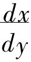本身则应该被认为是唯一而不可分的符号。就计算的运用说，尤其是就计算的应用说，计算由于微分系数的两端分开而取得的好处，因此便失去了，这一点可以暂时置之不理。那个极限现在应该是某一函数的极限，——它应该标出与此函数有关的某一个值，这个值是依导数（Ableitung）的方式而规定的。但是，用单纯的极限范畴，我们并不能比用这个注释中所涉及的东西前进更远；这个注释要指出在微分计算中出现为dx和dy的无限小，不仅具有一个非有限的、非已知的大小那种否定的、空洞的意义，如人们所说的一个无限的数量，或无限进展之类，而是具有量的、一个比率环节本身的质的规定性那种明确意义。但是这个范畴却对一个已知函数那样的东西，还没有比率，与这个函数的处理和那种规定在函数中的使用都没有牵涉；所以极限观念若是停留在为它所已经证明的规定性里，便什么也引导不出来。但是极限这一名词本身已经包含着它是某物的界限这种意思，即是说它表示了变量函数中所包含的某一个值；这就必须看一看这种具有极限的具体情况是如何发生的。——极限应该是两个增量互相具有的比率的极限；在一个方程式中，有关的两个变量，被当作是互为函数，它们被认为是以这两个增量而增加；这里的增长被认为是本来不确定的，所以也并没有使用无限小。但是，首先，这种寻找极限的道路，也招致了和其他方法所包含的同样的前后不一贯。这条道路如下。假如y＝fx，当y变为y＋k时，则fx应变为fx＋ph＋qh2＋rh3……等等，所以k＝ph＋qh2＋……等，而kh＝p＋qh＋rh2……。假如现在k和h消失了，那么，除p之外，第二项也消失，于是现在那个p就是两种增长比率的极限。可见h作为定量是被当作＝0，但是
的瞬刻，而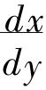本身则应该被认为是唯一而不可分的符号。就计算的运用说，尤其是就计算的应用说，计算由于微分系数的两端分开而取得的好处，因此便失去了，这一点可以暂时置之不理。那个极限现在应该是某一函数的极限，——它应该标出与此函数有关的某一个值，这个值是依导数（Ableitung）的方式而规定的。但是，用单纯的极限范畴，我们并不能比用这个注释中所涉及的东西前进更远；这个注释要指出在微分计算中出现为dx和dy的无限小，不仅具有一个非有限的、非已知的大小那种否定的、空洞的意义，如人们所说的一个无限的数量，或无限进展之类，而是具有量的、一个比率环节本身的质的规定性那种明确意义。但是这个范畴却对一个已知函数那样的东西，还没有比率，与这个函数的处理和那种规定在函数中的使用都没有牵涉；所以极限观念若是停留在为它所已经证明的规定性里，便什么也引导不出来。但是极限这一名词本身已经包含着它是某物的界限这种意思，即是说它表示了变量函数中所包含的某一个值；这就必须看一看这种具有极限的具体情况是如何发生的。——极限应该是两个增量互相具有的比率的极限；在一个方程式中，有关的两个变量，被当作是互为函数，它们被认为是以这两个增量而增加；这里的增长被认为是本来不确定的，所以也并没有使用无限小。但是，首先，这种寻找极限的道路，也招致了和其他方法所包含的同样的前后不一贯。这条道路如下。假如y＝fx，当y变为y＋k时，则fx应变为fx＋ph＋qh2＋rh3……等等，所以k＝ph＋qh2＋……等，而kh＝p＋qh＋rh2……。假如现在k和h消失了，那么，除p之外，第二项也消失，于是现在那个p就是两种增长比率的极限。可见h作为定量是被当作＝0，但是 却不因此而是＝
却不因此而是＝ ，它还仍然应该是一个比率。免去这里所包含的不连贯，应该是极限观念所获得的好处；同时p不是一个现实的比率，如
，它还仍然应该是一个比率。免去这里所包含的不连贯，应该是极限观念所获得的好处；同时p不是一个现实的比率，如 ＝
＝ 以外。另一方面，假如
以外。另一方面，假如 ＝p），它却反倒陷于困境了。另外，假如承认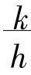＝0，——而有了h＝0，那么事实上自然也就有k＝0；因为k增长为y，只有在这个增长是h的条件下才会出现，——于是要问p，这个完全确定的量的值，究竟是什么。对此自然立刻有一个简单枯燥的回答，说它是一个系数，由什么导数发生的，——即以一定方式由原始函数所导出的第一个函数。假如对此可以满足，拉格朗日就实质而论，对此实际上也是满足的，那么，微分计算科学的一般部分，紧接着那种称为极限理论的形式部分，免掉了增长，然后又免掉了增长的无限小或任意的小，也免掉了这样的困难，即：除首项而外，或不如说只是除首项的系数而外，要把因引入那些增长而不可避免地出现的一系列的其他更多之项，重行销去，此外，也清除了与此相关的其他东西，首先是无限、无限接近等形式的范畴，以及在这里是同样空洞的连续量(54)范畴，而这些范畴在别处是像一个变化的倾向、发生、机缘等，同样被认为是必需的。就完全可以满足理论的枯燥规定而言，p不过是由展开一个二项式而引导出来的一个函数，但是除此而外，现在必须指出，p还有什么更多的意义和价值，即对以后的数学上的需要，还有什么关联和用处；关于这一点，将在注释二中讨论。这里接着首先要讨论的，是：问题主要所在的比率，对于它本来的质的规定性的理解，由于在表述中流行使用的渐近观念，引起了混乱。
＝p），它却反倒陷于困境了。另外，假如承认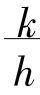＝0，——而有了h＝0，那么事实上自然也就有k＝0；因为k增长为y，只有在这个增长是h的条件下才会出现，——于是要问p，这个完全确定的量的值，究竟是什么。对此自然立刻有一个简单枯燥的回答，说它是一个系数，由什么导数发生的，——即以一定方式由原始函数所导出的第一个函数。假如对此可以满足，拉格朗日就实质而论，对此实际上也是满足的，那么，微分计算科学的一般部分，紧接着那种称为极限理论的形式部分，免掉了增长，然后又免掉了增长的无限小或任意的小，也免掉了这样的困难，即：除首项而外，或不如说只是除首项的系数而外，要把因引入那些增长而不可避免地出现的一系列的其他更多之项，重行销去，此外，也清除了与此相关的其他东西，首先是无限、无限接近等形式的范畴，以及在这里是同样空洞的连续量(54)范畴，而这些范畴在别处是像一个变化的倾向、发生、机缘等，同样被认为是必需的。就完全可以满足理论的枯燥规定而言，p不过是由展开一个二项式而引导出来的一个函数，但是除此而外，现在必须指出，p还有什么更多的意义和价值，即对以后的数学上的需要，还有什么关联和用处；关于这一点，将在注释二中讨论。这里接着首先要讨论的，是：问题主要所在的比率，对于它本来的质的规定性的理解，由于在表述中流行使用的渐近观念，引起了混乱。 ＝P，即等于依dx或i的方幂而展开的x＋dx，x＋i，这个二项式的首项系数。再不需要学更多的东西；以后的形式，如乘积的微分、指数的量等等推演，都可以机械地由此得出；用很少时间，或许用半点钟，便可以学会全部理论——因为求得微分，其反面，积分也就有了，即微分的原始函数也就求得了。不过，在以解析的方式，即以完全算术的方式，由变量函数的展开而求得那个系数之后，在这个变量由增长而获得一个二项式的形式之后——在课题这一情况很容易办好之后，而其另一情况，即正在发生的系列，除首项外，其余诸项都被省略，仍有其正确性；要懂得这一点并使其可以理解，却须费较长的工夫。假如情况是：唯有那个系数才是必要的，那么，这就会正如我们所说，只要有了系数的规定，一切与理论有关的东西，用不了半点钟便完结了，而省略系列的其余各项也并不成为困难，它们之作为系列各项（作为第二、第三等函数，它们的规定已经与第一项的规定一起解决了），倒是完全谈不到的，因为这里的事情与它们毫不相干。
＝P，即等于依dx或i的方幂而展开的x＋dx，x＋i，这个二项式的首项系数。再不需要学更多的东西；以后的形式，如乘积的微分、指数的量等等推演，都可以机械地由此得出；用很少时间，或许用半点钟，便可以学会全部理论——因为求得微分，其反面，积分也就有了，即微分的原始函数也就求得了。不过，在以解析的方式，即以完全算术的方式，由变量函数的展开而求得那个系数之后，在这个变量由增长而获得一个二项式的形式之后——在课题这一情况很容易办好之后，而其另一情况，即正在发生的系列，除首项外，其余诸项都被省略，仍有其正确性；要懂得这一点并使其可以理解，却须费较长的工夫。假如情况是：唯有那个系数才是必要的，那么，这就会正如我们所说，只要有了系数的规定，一切与理论有关的东西，用不了半点钟便完结了，而省略系列的其余各项也并不成为困难，它们之作为系列各项（作为第二、第三等函数，它们的规定已经与第一项的规定一起解决了），倒是完全谈不到的，因为这里的事情与它们毫不相干。 这个函数；一般和展开二项式那样，常数是展开的首项系数，为各方根之和，第二项系数是这些方根两个与两个等等乘积之和，所以这些常数在这里一般都是方根的函数；在积分计算里，常数也由一定的公式来规定，在这种情况下，它是被当作这一公式的函数来处理的。我们以后将用一种与函数不同的规定，来考察这些系数，其全部兴趣所在，只是系数在具体方面的意义。
这个函数；一般和展开二项式那样，常数是展开的首项系数，为各方根之和，第二项系数是这些方根两个与两个等等乘积之和，所以这些常数在这里一般都是方根的函数；在积分计算里，常数也由一定的公式来规定，在这种情况下，它是被当作这一公式的函数来处理的。我们以后将用一种与函数不同的规定，来考察这些系数，其全部兴趣所在，只是系数在具体方面的意义。 ＝c，那么，同样地，a＝
＝c，那么，同样地，a＝ 就是切线的规定，或
就是切线的规定，或 ＝c就是简单速度的规定。后者作为
＝c就是简单速度的规定。后者作为 是表现于与被称为匀加速运动的展开那种东西的关联之中；但是单纯的、简单匀速的（即不由运动诸能率之一的较高方幂规定速度的）一个能率，出现于匀加速的运动的系统之中，那就正如前面说过的，本身是空洞的假定，只是以方法的习惯成规为基础。方法既然从变量应有增长这一观念出发，那么，只是一次方幂的函数这样的变量当然也有增长。假如现在为了求出微分而必须认为由此而发生的第二个方程式与已知的方程式有区别，那么这种运算的空虚就表现出来了；因为前面已经讲过，在运算以前和以后，对于所谓增长和对于变量本身，方程式都是相同的。
是表现于与被称为匀加速运动的展开那种东西的关联之中；但是单纯的、简单匀速的（即不由运动诸能率之一的较高方幂规定速度的）一个能率，出现于匀加速的运动的系统之中，那就正如前面说过的，本身是空洞的假定，只是以方法的习惯成规为基础。方法既然从变量应有增长这一观念出发，那么，只是一次方幂的函数这样的变量当然也有增长。假如现在为了求出微分而必须认为由此而发生的第二个方程式与已知的方程式有区别，那么这种运算的空虚就表现出来了；因为前面已经讲过，在运算以前和以后，对于所谓增长和对于变量本身，方程式都是相同的。 比率的规定便归在q的系数a之内，它又是方程式的有关的第一函数，但一般只需要把它看作是a＝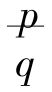，如以前所说，这是应用于曲线被当作切线的那种直线的规定。再者，现在既然假定了曲线方程式的第一函数，那么，它同样也是一条直线的规定；进一步说，既然假定了第一条直线的坐标线p与曲线的纵坐标y是同一的，那么，第一条直线被当作是切线与曲线相交的一点，也就是由曲线第一函数所规定的直线的起点，所以应该要指出的是：这第二条直线与第一条重合，即它是切线；用代数来表示，即因为y＝fx，和p＝Fq，现在设y＝p，所以fx＝Fq，而f′x＝F′q。现在被当作切线来应用的直线，与由方程式而来并被其第一函数所规定的直线，是重合的，所以第二条直线是切线；证明这一点将由横坐标的增量i和被函数展开的规定的纵坐标增量来帮忙。于是这里也同样出现了那个声名狼藉的增量；但是为了方才所说的目的而引入增量，以及依增量而展开函数，都必须与以前提到过的为求出微分方程式和为特殊三角形而使用增量，很好地区别开来。现在这里的使用是有理由而必要的；这种使用是在几何范围之内，因为切线与曲线有一共同的相交之点，在这切线与曲线之间，并没有另外的直线能够同样落在这一点上并通过其间，这是属于切线本身的几何规定的事。于是切线或非切线的质，便以这种规定而归结到大小的区别，那条线既是切线，绝对较大的小(62)便因与此有关的规定而加于这条切线之上。这种似乎是相对的小，丝毫不包含经验的东西，即不包含依赖定量本身的东西；假如需要比较的大小是依赖于环节的区别，而环节的区别就是方幂的区别，那么，这种小便是由公式的本性在质的方面建立起来的；由于这种区别归结于i和i2而且这个i归根到底应当意谓着是一个数，于是便须设想i是一个分数，而i2本身便比i小；这样，可以把i当作是一个随意的大小的这种观念，在此便是多余的，甚至用得不是地方。对较大的小的证明，因此也与无限小毫不相干，在这里丝毫不须引用无限小。
比率的规定便归在q的系数a之内，它又是方程式的有关的第一函数，但一般只需要把它看作是a＝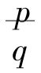，如以前所说，这是应用于曲线被当作切线的那种直线的规定。再者，现在既然假定了曲线方程式的第一函数，那么，它同样也是一条直线的规定；进一步说，既然假定了第一条直线的坐标线p与曲线的纵坐标y是同一的，那么，第一条直线被当作是切线与曲线相交的一点，也就是由曲线第一函数所规定的直线的起点，所以应该要指出的是：这第二条直线与第一条重合，即它是切线；用代数来表示，即因为y＝fx，和p＝Fq，现在设y＝p，所以fx＝Fq，而f′x＝F′q。现在被当作切线来应用的直线，与由方程式而来并被其第一函数所规定的直线，是重合的，所以第二条直线是切线；证明这一点将由横坐标的增量i和被函数展开的规定的纵坐标增量来帮忙。于是这里也同样出现了那个声名狼藉的增量；但是为了方才所说的目的而引入增量，以及依增量而展开函数，都必须与以前提到过的为求出微分方程式和为特殊三角形而使用增量，很好地区别开来。现在这里的使用是有理由而必要的；这种使用是在几何范围之内，因为切线与曲线有一共同的相交之点，在这切线与曲线之间，并没有另外的直线能够同样落在这一点上并通过其间，这是属于切线本身的几何规定的事。于是切线或非切线的质，便以这种规定而归结到大小的区别，那条线既是切线，绝对较大的小(62)便因与此有关的规定而加于这条切线之上。这种似乎是相对的小，丝毫不包含经验的东西，即不包含依赖定量本身的东西；假如需要比较的大小是依赖于环节的区别，而环节的区别就是方幂的区别，那么，这种小便是由公式的本性在质的方面建立起来的；由于这种区别归结于i和i2而且这个i归根到底应当意谓着是一个数，于是便须设想i是一个分数，而i2本身便比i小；这样，可以把i当作是一个随意的大小的这种观念，在此便是多余的，甚至用得不是地方。对较大的小的证明，因此也与无限小毫不相干，在这里丝毫不须引用无限小。 此外并没有赋予什么实在的意义。从这个比率＝P，还是同样不知道它与什么其他的比率相等；只有这个方程式，或说比例性，才对这个比率给了一种价值或意义。——如前所说，这种意义，即被称为应用的那种东西，是从别处，即从经验得来的，所以对于这里所谈的由求微分而导出的那些方程式，必须从别处知道它们是否有相等的方根，以便知道所得到方程式是否还正确。但是教科书中并没有明白注意到这种情况；当然这种情况是被消除了的，因为一个带有未知方根的方程式被归结为零，使其直接＝y，于是求微分时，结果当然就只有
此外并没有赋予什么实在的意义。从这个比率＝P，还是同样不知道它与什么其他的比率相等；只有这个方程式，或说比例性，才对这个比率给了一种价值或意义。——如前所说，这种意义，即被称为应用的那种东西，是从别处，即从经验得来的，所以对于这里所谈的由求微分而导出的那些方程式，必须从别处知道它们是否有相等的方根，以便知道所得到方程式是否还正确。但是教科书中并没有明白注意到这种情况；当然这种情况是被消除了的，因为一个带有未知方根的方程式被归结为零，使其直接＝y，于是求微分时，结果当然就只有 这一比率了。函数计算固然应该是和乘方函数打交道，微分计算固然应该是和微分打交道，但是绝不能由此得出结论，说取了微分或乘方函数的大小，它们本身也应该只是其他大小的函数。在理论的部分，只指示要导出微分或说乘方函数，还并没有想到那些被教导要按这样导出而处理的大小，本身也应该是其他大小的函数。
这一比率了。函数计算固然应该是和乘方函数打交道，微分计算固然应该是和微分打交道，但是绝不能由此得出结论，说取了微分或乘方函数的大小，它们本身也应该只是其他大小的函数。在理论的部分，只指示要导出微分或说乘方函数，还并没有想到那些被教导要按这样导出而处理的大小，本身也应该是其他大小的函数。 ＝2at解析的首项、假如翻译为语言并连带地移植为存在物，那就是：一个总和（这个概念，我们久已去掉了）的项应该是运动的一部分，并且这一部分应该这样地加到惯性力（即简单匀速运动）里去，那就是：运动在无限小的时间部分中是匀速的，但在有限的、即事实上存在着的时间部分中，是不匀速的。当然，fs＝2at，并且a和t的本身意义，都是已知的，这样也就一同建立了运动匀速的规定；既然a＝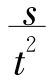，于是2at＝
＝2at解析的首项、假如翻译为语言并连带地移植为存在物，那就是：一个总和（这个概念，我们久已去掉了）的项应该是运动的一部分，并且这一部分应该这样地加到惯性力（即简单匀速运动）里去，那就是：运动在无限小的时间部分中是匀速的，但在有限的、即事实上存在着的时间部分中，是不匀速的。当然，fs＝2at，并且a和t的本身意义，都是已知的，这样也就一同建立了运动匀速的规定；既然a＝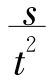，于是2at＝ 就是普遍的；但是人们丝毫不因此而多知道什么。只是错误的假定，即2at是作为一个总和的运动的一部分，给予了一个像是物理命题的错误假象而已。a这个因数本身，是一个经验的单位，是一个定量本身，它需要归到重力上去；假如要用重力这一范畴，那倒不如说s＝at2这一整体是结果，或更确切地说，是重力的法则。——从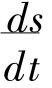＝2at导出的命题也是一样，这命题说：假如重力停止发生影响，那么，物体便将以坠落终止时所达到的速度，在相等于坠落所费的时间内，通过它所曾经过的空间的两倍。——这里包含着一个本身很歪曲的形而上学；坠落的终止，或说物体坠落所终止的时间部分，它本身总之还是一个时间部分；假如它不是时间部分，那就是假定了静止，从而也就没有速度；速度的提出，只能按照在一定时间内，而不是在时间的终止部分所经过的时间。假如现在毕竟要把微分计算应用于完全没有运动的物理部门，例如光的情况（除了它在空间中的所谓传播之外）和颜色的量的规定，而将这里一个平方函数的第一导数也叫做速度，那么，这就必须认为是冒充存在物更要不得的形式主义。
就是普遍的；但是人们丝毫不因此而多知道什么。只是错误的假定，即2at是作为一个总和的运动的一部分，给予了一个像是物理命题的错误假象而已。a这个因数本身，是一个经验的单位，是一个定量本身，它需要归到重力上去；假如要用重力这一范畴，那倒不如说s＝at2这一整体是结果，或更确切地说，是重力的法则。——从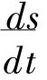＝2at导出的命题也是一样，这命题说：假如重力停止发生影响，那么，物体便将以坠落终止时所达到的速度，在相等于坠落所费的时间内，通过它所曾经过的空间的两倍。——这里包含着一个本身很歪曲的形而上学；坠落的终止，或说物体坠落所终止的时间部分，它本身总之还是一个时间部分；假如它不是时间部分，那就是假定了静止，从而也就没有速度；速度的提出，只能按照在一定时间内，而不是在时间的终止部分所经过的时间。假如现在毕竟要把微分计算应用于完全没有运动的物理部门，例如光的情况（除了它在空间中的所谓传播之外）和颜色的量的规定，而将这里一个平方函数的第一导数也叫做速度，那么，这就必须认为是冒充存在物更要不得的形式主义。 等等应该意谓着什么，以后用直接求微分来处理这个方程式，从这个出发点来阐释那种绝对运动的规律和规定：这些就恰恰相反，一定显得是很有兴趣的课题，解析在这种课题中会露出最可贵的光彩。
等等应该意谓着什么，以后用直接求微分来处理这个方程式，从这个出发点来阐释那种绝对运动的规律和规定：这些就恰恰相反，一定显得是很有兴趣的课题，解析在这种课题中会露出最可贵的光彩。
 等……。当运动已知时，第一部分运动在形式上是匀速的，有一个由f′t规定的速度，第二个是匀加速的运动，它是由一个与f″t成比例的加速的力而来的。“其余各项现在既然不与任何简单的、已知的运动有关，所以就不需特别考虑它们；我们并且将指明对于规定运动时间的开始之点，它们是可以抽掉的。”这一点随后便有了说明，但当然只是用一切项对于规定在一段时间经过的空间大小都属需要的那种系列，来和第三节表示落体运动的方程x＝at＋bt2比较，因为那里只有这样两项。由于解析展开而产生了各项，这个方程便有了说明，只是由于假定了这种说明，这个方程才获得它的形态；这个假定是匀加速运动由一个形式上匀速的，以在先前时间部分所达到的速度而继续的运动，和一个被付与重力的增长（它在s＝at2中就是a，即经验的系数）综合而成，——这一个区别在事物本性中并不存在，也无根据，而只是对着手解析处理时所得的东西，作了错误的物理的表现。——黑格尔原注
等……。当运动已知时，第一部分运动在形式上是匀速的，有一个由f′t规定的速度，第二个是匀加速的运动，它是由一个与f″t成比例的加速的力而来的。“其余各项现在既然不与任何简单的、已知的运动有关，所以就不需特别考虑它们；我们并且将指明对于规定运动时间的开始之点，它们是可以抽掉的。”这一点随后便有了说明，但当然只是用一切项对于规定在一段时间经过的空间大小都属需要的那种系列，来和第三节表示落体运动的方程x＝at＋bt2比较，因为那里只有这样两项。由于解析展开而产生了各项，这个方程便有了说明，只是由于假定了这种说明，这个方程才获得它的形态；这个假定是匀加速运动由一个形式上匀速的，以在先前时间部分所达到的速度而继续的运动，和一个被付与重力的增长（它在s＝at2中就是a，即经验的系数）综合而成，——这一个区别在事物本性中并不存在，也无根据，而只是对着手解析处理时所得的东西，作了错误的物理的表现。——黑格尔原注